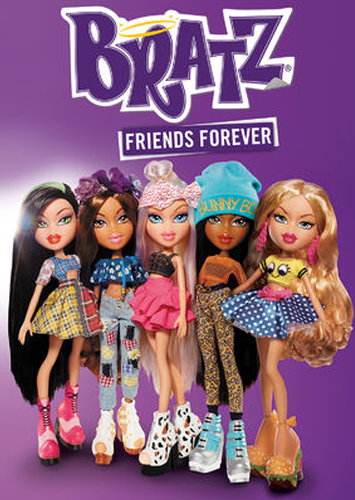

En junio de 2001, fueron lanzadas las muñecas Bratz con cuatro personajes de moda urbana, llamadas Yasmin, Cloe, Sasha y Jade. Ganaron gran popularidad, convirtiéndose en número uno en muchos países, tales como Francia, España, Italia, México, Venezuela, Japón y número dos en el Reino Unido. Las muñecas ganaron el Premio del Juguete del Año de Family Fun y el Premio Juguete del Año por elección popular de la Toy Industry Association, Inc. (TIA, Asociación de la Industria del Juguete). Aunque a las muñecas Bratz les fue mal en su debut el 21 de mayo de 2001, principalmente debido a la fama de Barbie, su popularidad aumentó la Navidad siguiente. En sus primeros cinco años, se vendieron 125 millones de productos en todo el mundo y en 2005, las ventas globales de productos Bratz y Bratz alcanzaron los dos mil millones de dólares. En 2006, un analista de la industria del juguete indicó que Bratz había capturado alrededor del cuarenta por ciento del mercado de muñecas de moda, en comparación con el sesenta por ciento de Barbie. La competencia entre Barbie y Bratz cada vez era mayor. En 2002, la Bratz fue el juguete del año en el Reino Unido, convirtiéndose en una seria competidora para la, durante muchos años número uno, muñeca de moda Barbie, siendo desde entonces un fenómeno mundial. En 2003, nuevamente ganaría un premio de la Asociación de la Industria del Juguete, en esta ocasión, al mejor juguete femenino del año, por «Bratz Super Stylin' Runway Disco». Después de la demanda de Mattel en la que MGA salió vencedor en 2010 programó el regreso de las muñecas para ese mismo año, pero los resultados no fueron los esperados, la popularidad de las muñecas había decaído, en parte por el parón durante los años que duró el juicio contra Barbie, pero también porque el nuevo estilo y diseño de las muñecas no gustó a los fanes. Habían perdido todo lo que las caracterizaba lo que provocó protestas en los fanes, que llegaron a los directivos de MGA. MGA Entertainment sintió que había apresurado el regreso de Bratz en el otoño de 2010 para celebrar el décimo aniversario de la marca, y la compañía quería darle a Bratz el regreso que realmente se merecía. Las Bratz regresaron en julio de 2015 con la introducción de Raya, un nuevo personaje (a pesar de compartir el mismo nombre con un personaje anterior), para acompañar a los cuatro principales originales. El logotipo de Bratz también se volvió al original y se adoptó un nuevo eslogan. Bratz se descontinuó nuevamente en 2016 después de un cambio de marca mal ejecutado y bajas ventas, con los fanes también descontentos y la caída de popularidad Isaac Larian anunció el 20 de mayo de 2017 que Bratz volvería en otoño de 2018, además de anunciar una colaboración con el diseñador de moda Hayden Williams. El Black Friday de 2018, se lanzó oficialmente el nuevo conjunto de muñecas de colección Bratz diseñadas por Hayden Williams En el otoño de 2012, las Bratzillaz se lanzaron como una línea derivada, que representa a las 'primas brujas' de las Bratz.
